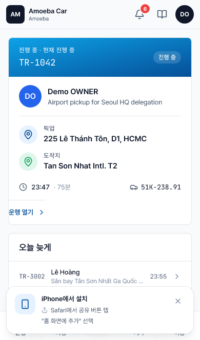
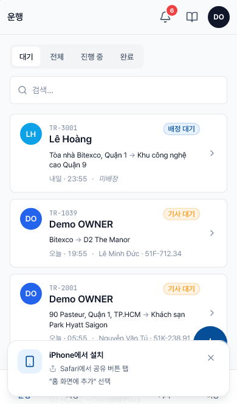

"오늘" 화면
- 대상
- 기사
- URL
/today— 기사 권한으로 로그인했을 때 표시되는 기본 페이지입니다- 업데이트
- 새 운행이 배정되거나 상태가 바뀌면 자동으로 갱신됩니다
"오늘" 화면은 기사의 메인 페이지입니다. 앱을 열자마자 진행 중인 운행, 다음 예정 운행, 그리고 본인에게 배정된 차량을 한눈에 확인할 수 있습니다.
화면 구성

운행 중 영역 (초록색 배너)
IN_PROGRESS 상태의 운행이 있으면, 화면 상단의 초록색 배너에 다음 정보가 표시됩니다.
- 운행 번호 (예:
TR-1042) - 승객 이름과 운행 목적
- 출발지 / 도착지
- 출발 시각, 소요 시간, 차량 번호판
- "운행 상세 →" 링크 — 탭하면 전체 정보 확인 및 종료 작업이 가능합니다
ℹ️
표시 우선순위: IN_PROGRESS (운행 중) → PENDING_DRIVER_CONFIRMATION (기사 확인 대기) → CONFIRMED (확인 완료). 시스템이 가장 적합한 운행을 자동으로 선택해 보여줍니다.
"오늘 중" 영역
같은 날짜의 다른 운행이 출발 시각 순서대로 정렬되어 표시됩니다. 항목을 탭하면 상세 정보를 볼 수 있습니다.
"내 차량" 영역
관리자가 본인에게 상시 운전하도록 지정한 차량이 표시됩니다. 항목을 탭하면 번호판, 모델, 주행거리, 정비 일정 등 차량 정보를 확인할 수 있습니다.
"내 운행" 탭 — 전체 이력 보기
하단 탐색 바의 내 운행 탭을 탭하면 본인에게 배정된 모든 운행(완료/진행 중/예정)을 출발 시각 순서대로 볼 수 있습니다.

하단 탐색 바
화면 맨 아래에 고정된 4개의 탭으로 구성됩니다.
| 탭 | 경로 | 사용 시점 |
|---|---|---|
| 오늘 | /today | 메인 화면, 가장 먼저 확인하는 페이지 |
| 내 운행 | /trips | 완료/진행 중/예정인 모든 운행 확인 |
| 비용 | /expenses | 비용 신규 등록 및 기록 이력 조회 |
| 나 | /settings/me | 언어 변경, 로그아웃, 운전면허 확인 |
시스템이 이 화면으로 이동시키는 시점
- 하루 중 처음 로그인했을 때
- 휴대폰에서 푸시 알림을 탭했을 때 (오늘 운행과 관련된 내용인 경우)
- 홈 화면 아이콘에서 PWA를 실행했을 때